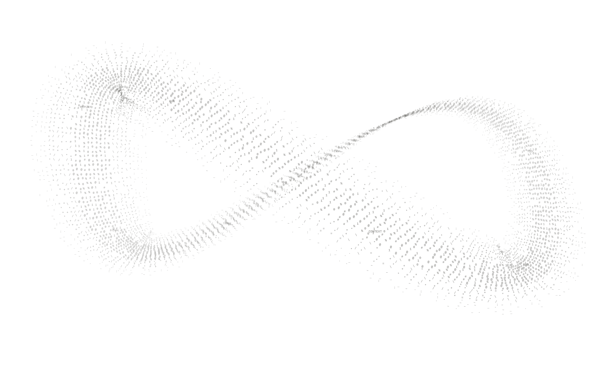

<meta charset="utf-8"><style>*{box-sizing:border-box}body{margin:0}a{color:inherit;text-decoration:none}header,footer{display:flex;justify-content:space-between}small,nav,footer{font:12px/1.5 'Courier New',monospace}img{object-fit:cover}p{max-width:420px;line-height:1.5}button{font:inherit}h1,h2,p{margin:0}body{width:1440px;height:1000px;overflow:hidden}header{padding:28px 60px;border-bottom:1px solid}nav{display:flex;gap:32px}.actions{display:flex;gap:30px;margin-top:30px}.actions a{border-bottom:1px solid;padding:12px 0}</style><title>Living index</title><style>body{background:#f0eee7;color:#191b18;font-family:Arial}main{margin:0 65px;position:relative;height:830px}h1{font:900 285px/.9 Arial;letter-spacing:-.085em;padding-top:20px}h1 span{color:#a05439}.claim{position:absolute;top:360px;left:0}h2{font:500 76px/.98 Arial;letter-spacing:-.065em}h2 em{font-family:Georgia;font-weight:400}.portrait{position:absolute;width:500px;height:390px;right:0;top:370px;filter:grayscale(1);border:1px solid #aaa}.loop{position:absolute;right:190px;top:180px;width:800px;opacity:.1;z-index:-1}main p{margin-top:26px;font-size:16px}footer{margin:0 65px;border-top:1px solid;padding-top:20px}</style><header><b>kallist / selected work</b><nav>WORK &nbsp; FILMS &nbsp; RESUME ↗ &nbsp; 中文</nav></header><main><h1>kallist<span>.</span></h1><div class="claim"><h2>AI systems.<br><em>Human control.</em></h2><p>AI application & Agent engineering.<br>South China Agricultural University · Class of 2027</p><div class="actions"><a>Explore work ↗</a><a>Resume ↗</a><a>Contact ↗</a></div></div></main><footer><span>01 VowEdit / 02 RepoBound / 03 CueParcel</span><span>ENGINEERING × VISUAL PRACTICE / 2026</span></footer>